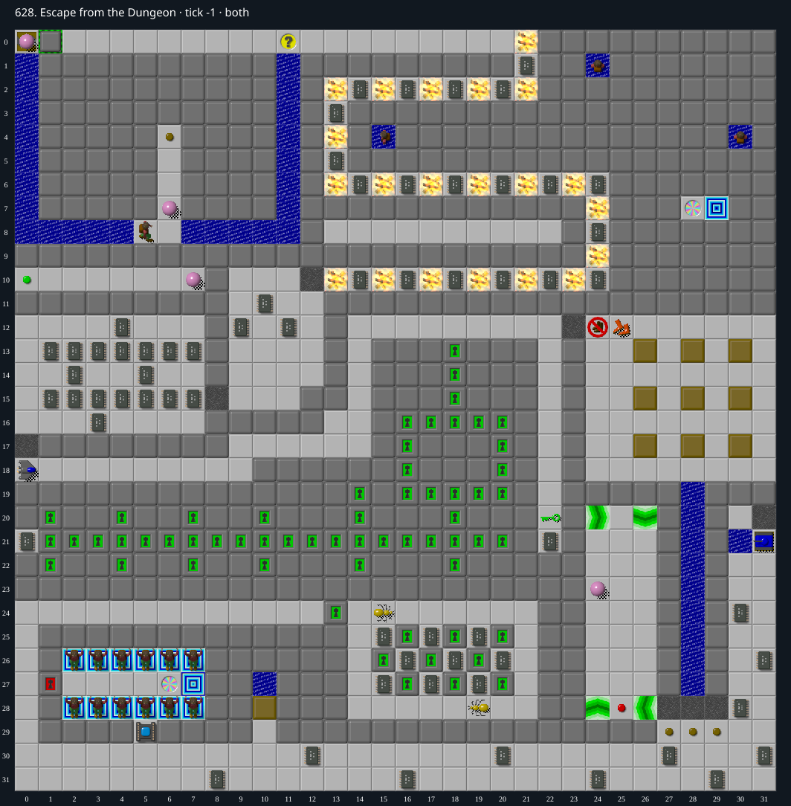

Jacques · Original Tile World MS
628. Escape from the Dungeon
Verified replayWinning MS replay verified in both the TypeScript runtime and native Tile World: 3111 steps, final tick 3110.
99 chips required · 300 second time limit
Verified in both engines. Native Tile World and the web MS engine both completed at tick 3,110 (155.5 seconds), with identical full traces. Verification certificate.
Winning strategy
- Expose and collect the initial flippers at (6,8). Reach the fire boots at (20,0), wait for the Ball to turn away, then leave and reenter to collect the boots.
- Collect the upper fire-corridor chips and green key (22,20), then clear the accessible upper and left areas before crossing the burglar (24,12). Collect replacement fire boots (25,12).
- Use all nine blocks in the right room to fill the nine Water-over-Chip cells (28,19) through (28,27). After every fill, walk onto the resulting Dirt, leave, and reenter to collect the buried chip before sending the next block along the same column. The block-source chips are collected while pushing.
- Collect the lower perimeter and all chips in the two-Bug room. Push the final block (10,28) north into Water (10,27), then clear the Dirt and collect its buried chip. All 99 chips are now collected.
- Open the socket at (5,29), leave and reenter for the red key beneath it, open the door (1,27), and enter teleport (6,27) to reach the exit (29,7).
Inspect both layers
The main map shows the initial runtime state. Switch to the buried layer to inspect hidden terrain and items. Hover coordinates are also available in the downloadable SVG.


Recorded checks and attempts
- DAT two-layer inventory: Exact DAT metadata/layers decoded; initial production runtime loaded and rendered with repository sprites.
- exact-runtime constructive prefix: 59 of 99 chips collected; nine-water bridge complete; fire boots and green key held.
- winning TWS roundtrip and independent runtime verification: {"kind":"winning TWS roundtrip and independent runtime verification","typescript":{"status":"completed","finalTick":3110,"stepCount":3111},"native":{"status":"completed","finalTick":3110,"stepCount":3111},"exactTraceParity":true,"nativeStderr":"","tws":"628.tws","certificate":"628.tws.json","typescriptFinalTick":3110,"nativeFinalTick":3110,"seed":0,"stepping":0}
Scope and limitations
- The supplied replay uses ordinary MS inputs and random seed 0; it is a winning example, not an optimized-time solution.
Evidence
- Structured report
- web/src/ruleset-ms/impl/builtinLevelRegistration.ts
- legacy_c/mslogic.c:1002-1011 (bounded cardinal movement)
- legacy_c/mslogic.c:1034-1042 (socket/key requirements)
- legacy_c/mslogic.c:1616-1736 (arrival/terrain effects)
- legacy_c/mslogic.c:1825-1832 (exit completion)
- web/src/ruleset-ms/impl/chipMovement.ts:104-108 (TypeScript completion)